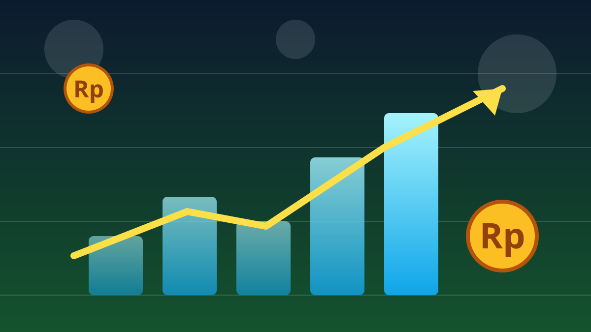

1 / 6

💰 EKONOMI
IHSG & Rupiah Merah Pagi Ini
IHSG sempat terjun 1,76%, rupiah tembus Rp17.943 per dolar — tapi plot twist: penutupan malah nyaris hijau. Kenapa bisa? Geser →
2 / 6
📊
Pagi yang berdarah
Selasa (13/10) pagi, IHSG dibuka melemah ke 5.914,98 lalu merosot hingga 104,56 poin atau 1,76% ke level 5.831,58 sekitar pukul 09.30 WIB, dengan 514 saham memerah.
Bersamaan dengan itu, rupiah melemah ke Rp17.943 per dolar AS — turun dari penutupan sebelumnya di Rp17.913.
3 / 6
🌍
Biang keroknya siapa?
Analis menyebut biang keladinya adalah eskalasi konflik di Timur Tengah — serangan ke bandara Riyadh bikin harga minyak dunia melambung dan investor kabur dari aset berisiko.
Ditambah ketidakpastian evaluasi MSCI terhadap pasar saham Indonesia, arus modal asing keluar makin deras dari bursa domestik.
4 / 6
🏦
Bank-bank ikut tumbang
Saham perbankan big caps ikut tertekan: BBRI, BBCA, dan BMRI melemah di sesi I, seiring koreksi IHSG 0,42% ke level 5.911 pada penutupan sesi pertama.
Yang menarik, BBNI malah melawan arus dan menguat 0,59% ke Rp3.400 per saham — satu-satunya bank besar yang hijau di sesi pagi.
5 / 6
🪙
Plot twist: sore hari pulih
Di akhir perdagangan, IHSG ternyata cuma ditutup melemah 0,17% — jauh lebih baik dari pagi hari. Pahlawannya? Saham-saham emas!
Merdeka Gold (EMAS) melesat 2,2% dan Antam (ANTM) naik 1,64%, dibantu rebound beberapa big caps. Logis sih — di tengah gejolak geopolitik, investor lari ke safe haven seperti emas.
6 / 6
🤔
Efeknya ke lo apa?
Rupiah melemah bikin barang impor — dari HP sampai skincare — berpotensi makin mahal. Kalau lo nabung buat beli gadget, jangan kaget kalau harganya merangkak naik.
Buat yang mulai belajar investasi, momen merah kayak gini jadi reminder: pasar itu roller coaster, bukan eskalator. Jangan panik jual, tapi juga jangan asal serok — riset dulu, valid.